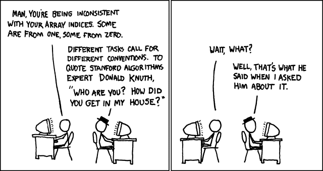
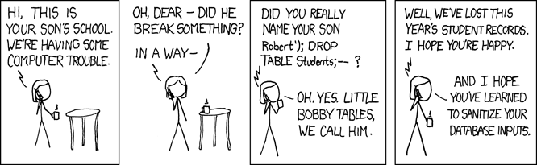

Arrays and Strings
One variable, many values. This chapter introduces C++'s first compound types: arrays that hold a whole series of data under a single name (in one or two dimensions), and the string class with its constructors, operators, and member functions — plus how the two differ from plain character arrays.
Many values, one name
5.1Compound types
Compound data types are created from the basic types, for when the basic types are not sufficient. The common ones: array, string, and class/struct (a later course). This chapter covers the first two.
Show me your flowcharts and conceal your tables, and I shall continue to be mystified. Show me your tables, and I won't usually need your flowcharts; they'll be obvious.
5.2Arrays: elements and subscripts
An array contains a set of data represented by a single variable name; each individual piece is an element, reached by its index (also called a subscript) — numbered from 0:
Declare with <type> <name>[<elements>]; — e.g.
int arMyArray[3]; reserves 3 integers (initially undefined!). Read and
write elements with name[index]. In a 5-element array the valid
indices are 0…4 — arStuGrade[3] is the 4th element.
char arStuGrade[5] = {'A', 'B', 'C', 'D', 'F'}; for (int i = 0; i < 5; i++) cout << arStuGrade[i] << endl; const int arraySize = 12; // one name for the size — used twice below int a[arraySize] = {1, 3, 5, 4, 7, 2, 99, 16, 45, 67, 89, 45}; int total = 0; for (int i = 0; i < arraySize; i++) total += a[i]; // Total of array element values is 383
So let us let our ordinals start at zero: an element's ordinal (subscript) equals the number of elements preceding it in the sequence.

string starts at index 0, full stop.
Comic: xkcd 163 “Donald Knuth” by Randall Munroe ·
CC BY-NC 2.5
5.3Multidimensional arrays
C++ allows arrays of arrays: each extra bracket pair adds a dimension.
int b[4][3]; is a two-dimensional array of 4 × 3 = 12 elements —
think of it as rows and columns:
| Column 1 | Column 2 | Column 3 | |
|---|---|---|---|
| Row 1 | b[0][0] | b[0][1] | b[0][2] |
| Row 2 | b[1][0] | b[1][1] | b[1][2] |
| Row 3 | b[2][0] | b[2][1] | b[2][2] |
| Row 4 | b[3][0] | b[3][1] | b[3][2] |
In memory, though, all elements are stored contiguously starting at
the array's base address — the grid is a way of thinking, not a layout. Nested loops
(Chapter 4!) are the natural way to walk a 2-D array: the slides' Example 5.3.1 reads
a 3×3 matrix and tests a[i][j] != a[j][i] to decide whether it is
symmetric, and Example 5.3.2 stores a whole student score table, one row per student.
b[row][col]. And the cabinet isn't one grid nested inside another:
it's built flat, one row of drawers after the next, which is precisely how C++ actually stores
b[4][3] in memory — contiguously, not as four separate little arrays.
Photo: “Wooden Card Catalog Furniture” by MarkBuckawicki ·
Wikimedia Commons ·
CC0 (cropped)
I will, in fact, claim that the difference between a bad programmer and a good one is whether he considers his code or his data structures more important. Bad programmers worry about the code. Good programmers worry about data structures and their relationships.

5.4The string class
A string stores a sequence of characters — words or sentences. It is a
compound type from the standard library, so include its header:
#include <string>. It can be created many ways:
string str1; // an empty string string str2("Good Morning"); // from a literal string str3 = "Hot Dog"; // assignment form string str4(str3); // a copy → "Hot Dog" string str5(str4, 4); // from index 4 → "Dog" string str6 = "linear"; string str7(str6, 3, 3); // 3 chars from idx 3 → "ear"
| Operator | Description |
|---|---|
| += | appends characters to a string |
| = | assigns new character values to the contents |
| [ ] | references the character at a given index |
| + | combines (concatenates) two strings |
getline(cin, message)accepts characters until Enter — spaces included. Plaincin >>stops at the first whitespace.length()andsize()both return the number of characters.at(i)returns the character at index i —s.at(s.length() - 1)is the last one.
A string read with getline can hold anything the user types —
there is no rule that it looks like a name, or a number, or is even a sensible length. Every program
that reads a string from outside (a keyboard, a file, a network) has to treat it as data first and
decide afterwards whether it is well-formed. Trusting it blindly is exactly how "just a string" turns
into a security bug — this course doesn't touch databases, but the lesson generalises to any place a
raw string reaches code that interprets it:

5.5Character arrays vs strings
Character array (char[]) | string |
|---|---|
| a sequential collection of type char | a sequence of characters as a single data type |
| no built-in methods | built-in functions: at(), length(), size(), … |
| elements accessed by index | index or member functions |
| fixed size — cannot be changed | dynamic size — grows and shrinks as needed |
| contiguous memory, managed by you | memory managed automatically |
hbtype = *p++; n2s(p, payload); // "payload" is a length the CLIENT sent — up to 65535 pl = p; // pl now points at the bytes that follow in the buffer /* ...no check here that "payload" actually fits inside the bytes received... */ memcpy(bp, pl, payload); // copies "payload" bytes starting at pl — often past the end
If the client claimed a 64 KB payload but sent only one byte, memcpy still copied
64 KB starting at pl into the reply — whatever else happened to be sitting in server
memory next to it, including passwords and private encryption keys. The one-line fix added the bounds
check that was missing: if (1 + 2 + payload + 16 > s->s3->rrec.length) return 0; —
discard the request if the claimed length doesn't fit what actually arrived. Read the
Wikipedia summary
(CVE-2014-0160) or the original heartbleed.com,
written by the researchers who found it. The lesson for this course: a length that
comes from outside your program is a claim, not a fact — check it before you trust it, exactly like
Section 5.2's “no bounds checking” warning, just with higher stakes.
Chapter 5 quiz
25 questions — subscripts, dimensions, constructors, and the bounds trap.
Programming exercises
Arrays, a 2-D matrix, and the string constructors — every one runs in the page, and the playground's bounds checking will catch your off-by-one errors kindly.
Group discussion: design the gradebook
Teams of 3–4 · one class period to prepare · a 5-minute presentation with a live run. Counts toward the class-activities 10%.
The task
Build a mini gradebook in the spirit of Example 5.3.2: a 2-D array holds n students × m score columns, the program computes a weighted final score per student (the team chooses the weights and must justify them), and prints the whole table with aligned columns. Before writing any code, the team must present its data design: what does each row mean, what does each column mean, and where does the computed final score live?
Constraints that force Chapter 5 thinking
- The table must be one 2-D array — not separate 1-D arrays per column — and the team must argue why (or argue the opposite and defend it!).
- All input, computation, and printing walked with nested loops; sizes come from
const intnames used everywhere. - One string feature somewhere real: student names read with
getline, or a letter-grade column built by indexing achararray.
Roles
| Role | Responsibility |
|---|---|
| Data designer | owns the row/column meaning and the weights — presents the design first |
| Programmer | drives the Playground; the team dictates the nested loops together |
| Boundary hunter | tests n = 1, the largest allowed n, and a score at each end of the range |
| Presenter | demos the run and explains why index [i][j] means “student i, column j” |
const int design require you to change? Why is the final score stored
in the table instead of printed and forgotten? Where exactly would an
out-of-bounds index hide in this program?
Further reading
learncpp.com — Containers and arrays
Arrays in modern C++ — including std::vector, the resizable array you will meet in later courses.
Tutoriallearncpp.com — std::string
Strings in depth: input quirks, substrings, and the member-function toolbox.
Referencecppreference — std::string
Every constructor and member function — the full version of this chapter's table.
ReferenceWikipedia — Buffer overflow
What “no bounds checking” costs in the real world — the security bug class born from arrays.
True storyheartbleed.com — the Heartbleed bug
Written by the researchers who found CVE-2014-0160: a missing length check that leaked server memory to anyone who asked.
ClassicDijkstra — Why numbering should start at zero (EWD831)
The 1982 note that explains, in one page, why every array and string in this course starts counting at 0.
VideoComputerphile — Running a Buffer Overflow Attack
Eighteen minutes turning “no bounds checking” into a real exploit against a small C program.
Tutoriallearncpp.com — Multidimensional arrays
Row-major memory layout, nested-loop iteration, and why b[4][3] is one block of 12, not four blocks of three.
TextbookMalik — C++ Programming, Chapters 8–9
Arrays, strings, and their algorithms — searching and sorting included.